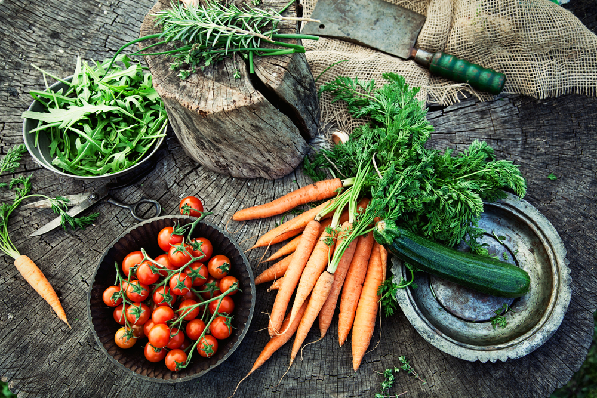

The Healthy Circle
The Healthy Circle
Login
Sign up
Why do you need to eat organic food?
By Dr. Joseph Mercola with Rachael Droege
The decision to purchase organic food over conventionally grown food is a personal one, and as you walk through the supermarket, many of which are now adding organic sections, you will likely ask the question: Is organic food really better?
Well, organic food is certainly growing in popularity, and the global sales reflect this having increased over 10 percent to reach $23 billion in 2002.
The U.S. market is also expanding as consumers increase their demand for healthy and natural products. U.S. organic food sales have increased from $3.5 billion in 1996 to more than $9 billion in 2001.
Organic farming differs from conventional farming in the methods used to grow crops. Where traditional farmers apply chemical fertilizers to the soil to grow their crops, organic farmers feed and build soil with natural fertilizer. Traditional farmers use insecticides to get rid of insects and disease, while organic farmers use natural methods such as insect predators and barriers for this purpose. Traditional farmers control weed growth by applying synthetic herbicides, but organic farmers use crop rotation, tillage, hand weeding, cover crops and mulches to control weeds.
The result is that conventionally grown food is often tainted with chemical residues, which can be harmful to humans. There is debate over whether dietary exposure to pesticides at levels typically found on food is dangerous, but experts say that consumers should use caution. The Environmental Protection Agency (EPA) considers 60 percent of herbicides, 90 percent of fungicides and 30 percent of insecticides to be carcinogenic.
Pesticides can have many negative influences on health, including neurotoxicity, disruption of the endocrine system, carcinogenicity and immune system suppression. Pesticide exposure may also affect male reproductive function and has been linked to miscarriages in women.
Aside from pesticide contamination, conventional produce tends to have fewer nutrients than organic produce. On average, conventional produce has only 83 percent of the nutrients of organic produce. Studies have found significantly higher levels of nutrients such as vitamin C, iron, magnesium and phosphorus, and significantly less nitrates (a toxin) in organic crops.
There is little question that organic foods are superior
to non-organic ones. However, I see many patients who are
not eating any vegetables because they either cannot afford
them or they are too difficult to obtain.
Please understand that it is better to eat non-organic vegetables
than no vegetables at all.
In the same vein, it is also important to realize that fresh
non-organic vegetables will be better than wilted and rotten
organic vegetables that are occasionally the only ones available
in smaller organic produce stands. There are many highly perishable
nutrients that degrade with time and exposure to air and ultraviolet
radiation. If the organic vegetables are seriously damaged
then it would be far wiser to eat fresh, undamaged non-organic
vegetables.
Hopefully, as the demand for organic increases the prices
will drop, and the supply will increase making it far easier
to obtain relatively inexpensive high-quality organic produce.
If you must buy conventional produce, there are ways to reduce your pesticide exposure. Thoroughly washing all fruits and vegetables will help, although all pesticide residues cannot be removed by washing. You can also remove the outer layer of leaves or peel vegetables if possible. Another alternative is to grow your own vegetables, although this takes space, time and climate considerations.
Another option is to buy organic produce selectively, as certain foods tend to have higher or lower amounts of pesticides. The following foods tend to have the highest levels of pesticides (from Environmental Working Group's FoodNews.org):
| Fruit | Vegetables |
| 1. Peaches | 1. Spinach |
| 2. Apples | 2. Bell Peppers |
| 3. Strawberries | 3. Celery |
| 4. Nectarines | 4. Potatoes |
| 5. Pears | 5. Hot Peppers |
| 6. Cherries | |
| 7. Red Raspberries | |
| 8. Imported Grapes |
These foods tend to be lower in pesticide levels:
| Fruit | Vegetables |
| 1. Pineapples | 1. Cauliflower |
| 2. Plantains | 2. Brussels Sprouts |
| 3. Mangoes | 3. Asparagus |
| 4. Bananas | 4. Radishes |
| 5. Watermelon | 5. Broccoli |
| 6. Plums | 6. Onions |
| 7. Kiwi Fruit | 7. Okra |
| 8. Blueberries | 8. Cabbage |
| 9. Papaya | 9. Eggplant |
| 10. Grapefruit | |
| 11. Avocado |
In the case of organic foods such as grains and milk, you are better off avoiding these products all together. Organic grain will disrupt your insulin levels just like ordinary grain, and organic milk is pasteurized, which comes with its own slew of negative health effects. Your best bet is to avoid grains and choose raw milk instead.